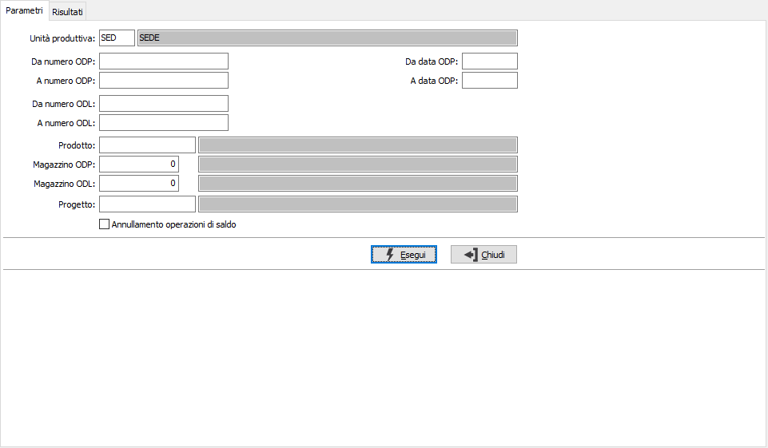
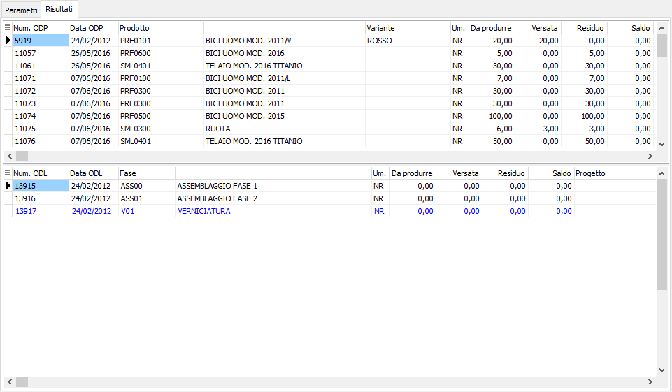
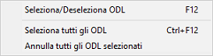
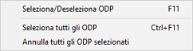

Saldo ordini
La funzione consente di chiudere ODP o singoli ODL che non verranno prodotti; è possibile agire sia sull’ODP (in questo caso verranno saldati tutti gli ODL ancora aperti) oppure a livello di ODL. Nel caso in cui l’ODL si riferisca a fasi esterne la procedura provvede ad aggiornare anche gli OT generati. Nel caso in cui l’operazione di saldo di una fase esterna sia effettuata dal programma di saldo ordini terzisti presente nel menù del modulo “Conto lavoro” viene automaticamente aggiornato anche l’ODL corrispondente. Il saldo dell’ordine diminuisce l’ordinato a produzione del composto (per la quantità ancora da produrre) e l’impegnato da produzione dei componenti (per la quantità ancora da utilizzare).
Nei parametri, oltre normali limiti di selezione quali numero ODP e ODL, data ODP, prodotto ecc. viene richiesta l'unità produttiva con proposta l'unità produttiva di default valida per l'utente connesso ad OS1; è possibile solo scegliere l'unità produttiva, se gestite in configurazione le unità produttive multiple; è inoltre possibile, spuntando la casella "Annullamento operazioni di saldo" effettuare l'operazione di annullamento con le stesse caratteristiche descritte per il saldo.

La pagina dei Risultati riporta in due griglie gli ODP (sopra) ed i relativi ODL (sotto) e per ognuno sono riportati i dati di base e le quantità da produrre, versate e residue.


Da questa pagina è possibile effettuare il saldo delle singole fasi dell'ODP (ODL) o dell'intero ODP con il doppio clic del mouse oppure tramite i menù contestuali accessibili tramite il tasto destro del mouse sulle relative griglie. Per quanto riguarda gli ODL è possibile saldare i singoli ODL, solo per quanto riguarda l'ultima fase è necessario che le fasi precedenti siano già chiuse o saldate; se si saldano tutte le fasi e poi si toglie il saldo ad una delle fasi precedenti l'ultima anche a questa sarà tolto il saldo.Per rendere effettivo la registrazione, è necessario confermare premendo il bottone Salva o il tasto funzione F10.
